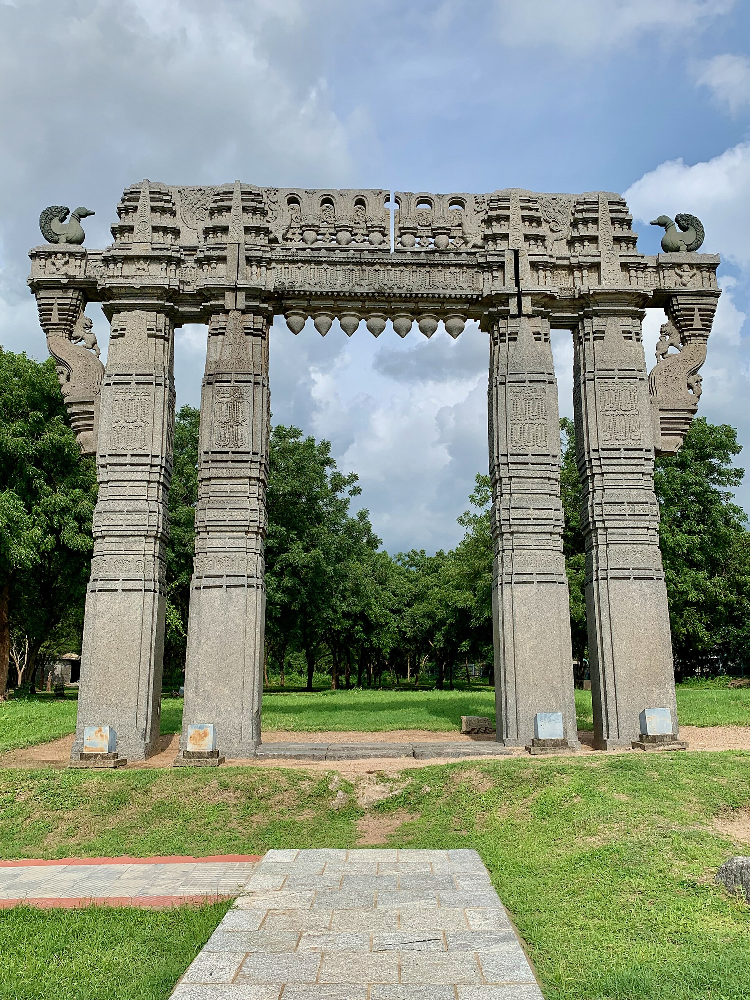
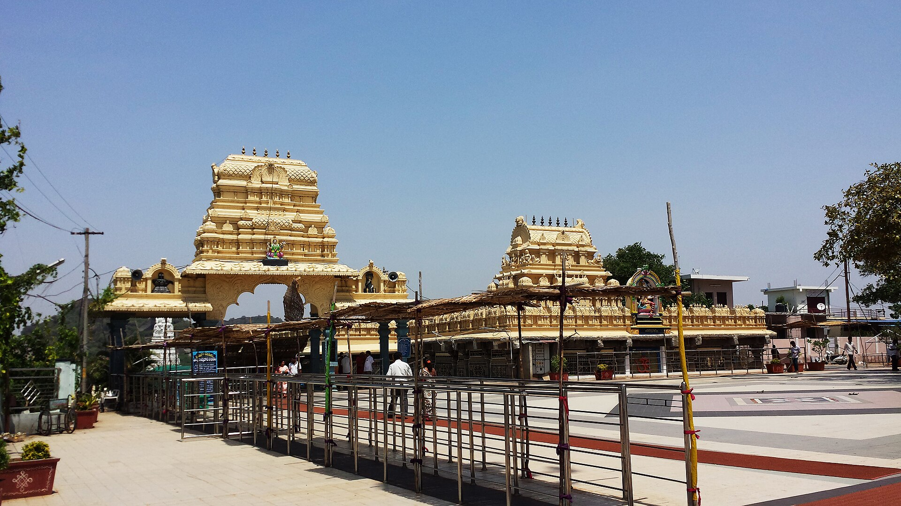
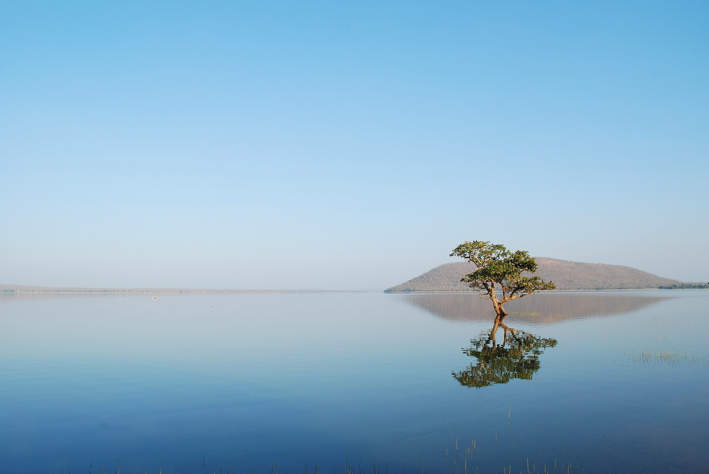
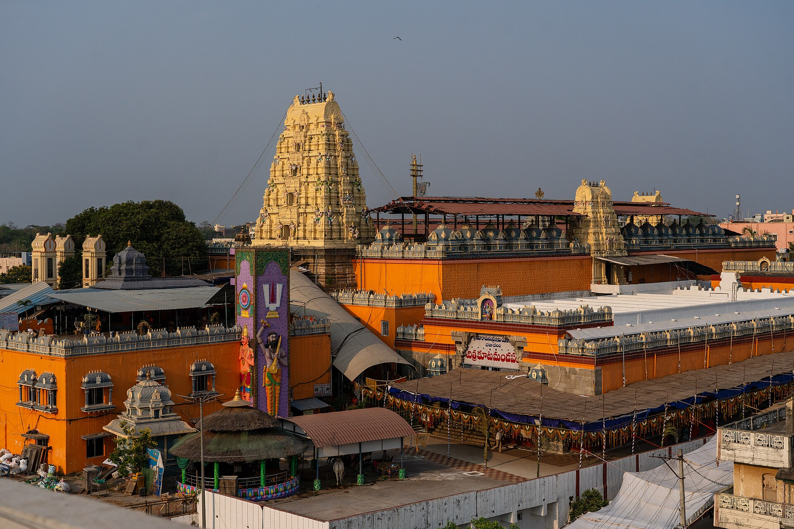

Kala Thoranam
13th c.
Four carved gateways at the dead centre of the stone fort, still standing in an empty field. Everything they once framed is gone; they are now the emblem of Telangana.
2 · Orugallu — the one stone
Kakatiya capital · besieged 1310 · annexed 1323
The Kakatiyas built a stone city inside an earthen one, dammed an entire plateau that had no perennial river, produced one of medieval India's very few reigning queens, and controlled the only diamond country then known to the world. When Delhi came for them, it came for the diamonds.
Telangana is a dry upland. The Kakatiyas made it rich by building tank after tank — some five thousand of them — and chaining them so that the overflow of one fed the next, an artificial hydrology laid over a whole landscape. Pakhal, Laknavaram and the Ramappa tank still hold water eight centuries later.
King Ganapati went further and abolished every trade duty except a single fixed levy, which brought merchants and shipping to the Godavari–Krishna coast. Gribble, surveying the ruins in the 1890s, took the tanks as his proof that the pre-conquest Deccan was no wilderness: its rulers, he wrote, 'devoted great attention to the improvement of agriculture'.
At the centre stood Orugallu, 'one stone': an outer mud rampart more than seven miles round with seventy bastions, each under its own commander, and inside it a circular stone fort with its own ditch. Of the stone city, four carved gateways survive in an empty field, holding up nothing. They are now the emblem of the state of Telangana.
Ganapati had no son. His daughter succeeded him, took the male name Rudradeva, ruled in male dress, beat off Yadava invasions and held the kingdom for a quarter of a century. Marco Polo, on the Coromandel coast at the end of her reign, wrote admiringly of a queen who governed with justice and equity.
Her grandson Prataparudra inherited a wealthy, well-defended and entirely unprepared kingdom, at the moment the armies of Delhi discovered the Deccan.
Malik Kafur reached Hanamkonda hill on 19 January 1310 and assigned each division of ten thousand a sector of the perimeter. The moat was filled with mud and stone; siege engines broke the outer doors; the outer fort fell on 16 February.
Amir Khusrau, who wrote the campaign up in verse, describes the stockade Kafur built around his own camp out of the city's sacred groves — trees cut down 'notwithstanding their groans', into a wall so solid that if fire had rained from heaven the camp would have been unscathed. Of the city's own defences he wrote that the mud wall was so strong a steel spear could not pierce it, and the inner stone wall so smooth an ant could not climb it.
The inner fort was never taken. Prataparudra negotiated, sending out a golden statue of himself with a chain around its neck to signify unconditional surrender, and with it his treasure: a hundred elephants, seven thousand horses, and one stone the chroniclers called unrivalled in the world.
The identification is made by Khafi Khan — writing in the eighteenth century, four hundred years after the event. The contemporary sources say only that there was a gem without equal.
The claim is plausible in the sense that the Krishna valley was the world's only diamond source at the time, so any spectacular Indian stone of that era probably did come from these mines. It is not evidence that this particular stone is that particular diamond.
The loot figures are equally slippery: the same campaign is reported as a hundred elephants with seven thousand horses in one place and with twenty thousand in another.
A first Tughluq siege collapsed when a false rumour of the sultan's death reached the camp and the army mutinied. Ulugh Khan — the future Muhammad bin Tughluq — came back within four months with reinforcements and took the city. Prataparudra was sent north and probably took his own life on the road near the Narmada. Warangal was annexed and its name changed to Sultanpur.
The dispersal mattered more than the conquest. Within thirteen years the Telugu chiefs had taken the city back: Prolaya Nayaka raised the revolt from Rekapalle, and his successor Kapaya Nayaka drove the Tughluq governor out in 1336 — supported, in the same years, by the Hoysala Veera Ballala III.
Others rode south-west to the gorge of the Tungabhadra. In the traditional account two of them were the brothers Harihara and Bukka, and 1336 is also the foundation date of Vijayanagara.
Almost everything we read about these campaigns comes from Persian chronicles written for the victors. The Vilasa copper-plate grant of Prolaya Nayaka, issued in 1330, is the Telugu country describing what had happened to it.
It records that Brahmanas were forced to abandon their religious practices, that images were overturned and broken, that the endowed lands of the learned were confiscated, and that cultivators were stripped of the fruits of their labour until their families were ruined.
It is a partisan document too — it is a charter justifying a revolt. But it is the closest thing we have to testimony from the invaded.
Ramappa temple, thirty-five miles from Warangal, is said to be built of bricks so light they float on water, and to have survived eight centuries of earthquakes because of it.
Unusually, the legend is roughly true. The tower's bricks are extremely porous and of very low density, and samples have been found that do float. The foundation is genuine engineering as well: a 'sandbox' raft of packed sand that damps seismic shock — base isolation, six centuries early.
It is also the only temple in India named after its sculptor rather than its god or its king.
“Every cursed tree which was in that capital of idolatry was cut down to the roots… so that a wooden fortress was drawn round the army, of such stability that if fire had rained from heaven, their camp would have been unscathed.”Amir Khusrau, Khazain-ul-Futuh — on the siege of 1310
Two concentric rings — an earthen rampart seven miles round and a stone fort inside it — with Hanamkonda to the north-west and the great temples scattered east across the tank country.

13th c.
Four carved gateways at the dead centre of the stone fort, still standing in an empty field. Everything they once framed is gone; they are now the emblem of Telangana.

13th c.
A circular enceinte with its own ditch inside the earthen city — the part Malik Kafur never took. Prataparudra negotiated rather than let it be stormed.
13th c.
The great Shiva temple at the fort's heart, wrecked after the conquest. Its carved members were reused across the site, which is why fragments of it turn up everywhere.

1163
Rudradeva's star-shaped triple shrine at Hanamkonda, in black basalt polished until it reads as marble, with a monolithic Nandi in the forecourt. Gribble called it one of the most perfect specimens of Chalukyan work in southern India.
the siege of 1310
Malik Kafur took position on this hill on 19 January 1310 and divided the perimeter among his divisions. The sacred groves below it became the timber of his stockade.

6th c., rebuilt
An older shrine on a rock between Warangal and Hanamkonda, beside its own lake — one of the few sacred sites here with continuous life through the conquest.

13th c.
One of the great Kakatiya tanks, built by chaining reservoirs so that each overflow fed the next. It still irrigates, eight hundred years after the dynasty that dug it ended.

1213
Named for its sculptor, built on a sandbox foundation with bricks light enough to float, and carved with bracket figures that are the finest sculpture the Deccan produced. UNESCO World Heritage since 2021.

17th c. rebuild
Far to the south-east on the Godavari: the temple that Kancherla Gopanna rebuilt with state revenue while serving as a Qutb Shahi tahsildar, and went to prison in Golconda for.